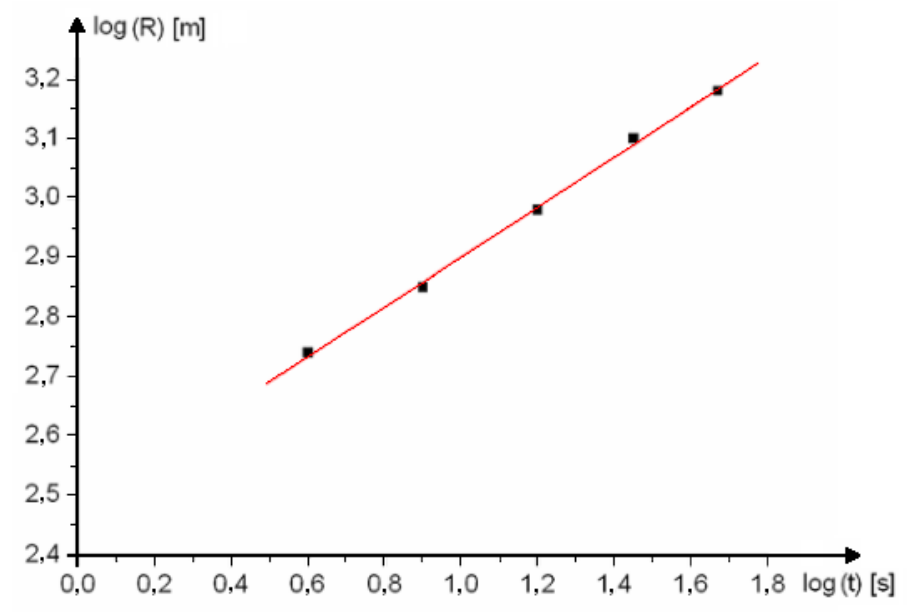
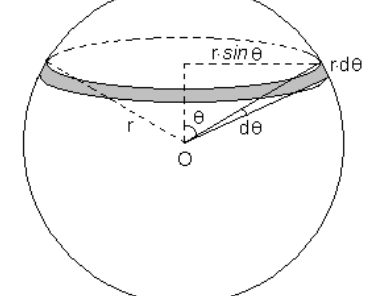
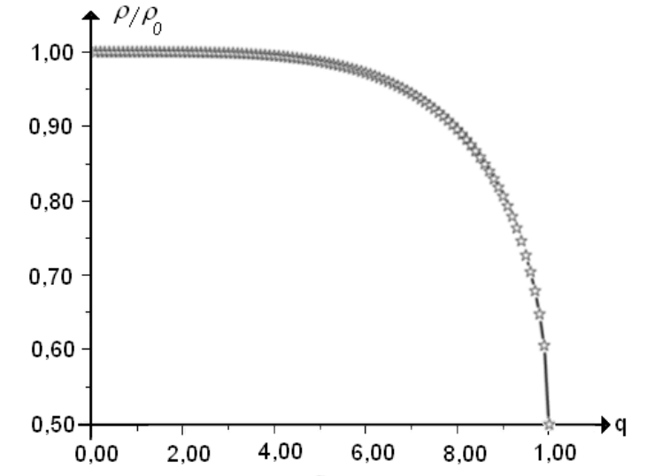
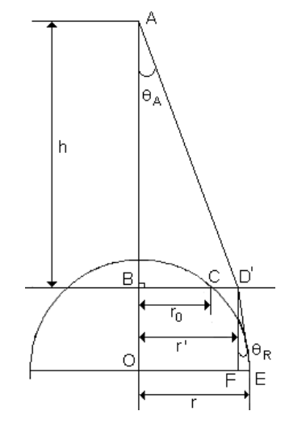

원문: Romanian Master of Physics 2017, Theoretical Exam – October 27, 2017. Part A는 영어 원문 “Marking scheme”, Part B는 루마니아어 원문 “Barem de evaluare”에서 번역하였다. 배점은 원문의 p를 pt로 표기하였고, 소수점 표기(마침표/쉼표)는 각 원문 그대로 두었다. 다른 풀이라도 올바른 결과에 이르면 그에 상응하는 점수를 준다.
| 번호 | 이론 문제 2 – Part A | 배점 | |||||||||||||||||||||||||
| a. | 다음에 대하여: \[R\sim t^\alpha\cdot E^\beta\cdot\rho^\gamma\] | 0.1 pt | 0.5 pt | ||||||||||||||||||||||||
| \[L = T^\alpha\cdot\left(M\cdot L^2\cdot T^{-2}\right)^\beta\cdot\left(M\cdot L^{-3}\right)^\gamma\] | 0.1 pt | ||||||||||||||||||||||||||
| \[\begin{cases}\alpha-2\beta = 0\\ 2\beta-3\gamma = 1\\ \beta+\gamma = 0\end{cases}\] | 0.1 pt | ||||||||||||||||||||||||||
| \[\alpha = \frac25\qquad\beta = \frac15\qquad\gamma = -\frac15\] | 0.1 pt | ||||||||||||||||||||||||||
| \[R\sim t^{\frac25}\cdot\left(\frac E\rho\right)^{\frac15}\] | 0.1 pt | ||||||||||||||||||||||||||
| b. | 다음에 대하여: \[C \cong 1\qquad R = t^{\frac25}\cdot\left(\frac E\rho\right)^{\frac15}\] | 0.1 pt | 1.5 pt | ||||||||||||||||||||||||
| \[\log R = \frac25\cdot\log t+\frac15\cdot\log\frac E\rho\] | 0.3 pt | ||||||||||||||||||||||||||
| \[y = A\cdot x+B\,,\ \text{여기서}\ \begin{cases}y = \log R\\ x = \log t\\ A = \dfrac25\\[2mm] B = \dfrac15\log\dfrac E\rho\end{cases}\] | 0.2 pt | ||||||||||||||||||||||||||
 | 0.5 pt | ||||||||||||||||||||||||||
| 표 1의 자료에 직선을 맞추면(line fitting) 기울기와 절편은 다음과 같다. \[\begin{cases}A = 0.42\\ B = 2.48\end{cases}\] | 0.2 pt | ||||||||||||||||||||||||||
| 그림 1의 사진들에 해당하는 원자 폭탄 폭발에서 방출된 에너지의 양의 추정값 \[E \approx 3\cdot10^{12}\,J\] | 0.2 pt | ||||||||||||||||||||||||||
| 총점: 이론 문제 2 – Part A | 2.0 pt | ||||||||||||||||||||||||||
© 채점 기준 제안: Prof. Dr. Delia DAVIDESCU, Conf. Univ. Dr. Adrian DAFINEI
| 번호 | 과제 1 | 배점 | |
| 1a. | 다음에 대하여: 반지름 $r\cdot\sin\theta$, 두께 $h' = r\cdot d\theta\cdot\sin\theta$인 원판의 부피 \[dv = \pi\cdot r^3\cdot\sin^3\theta\cdot d\theta\]  | 0,1 pt | 0,5 pt |
| 수박 중 물에 잠긴 부분의 부피 $V_0$: \[V_0 = \int_{\theta_0}^{\pi}\pi\cdot r^3\cdot\sin^3\theta\cdot d\theta\] | 0,1 pt | ||
| \[V_0 = \pi\cdot r^3\cdot\frac23\cdot\left[1+\frac{\cos\theta_0}{2}\cdot\left(3-\cos^2\theta_0\right)\right]\] | 0,1 pt | ||
| \[q = \frac{r_0}{r} = \sin\theta_0\] | 0,1 pt | ||
| \[V_0 = \frac23\cdot\pi\cdot r^3\cdot\left[1+\left(1+\frac{q^2}{2}\right)\sqrt{1-q^2}\right]\] | 0,1 pt | ||
| 1b. | 다음에 대하여: 수박이 물 표면에 떠 있을 조건 $\;\vec G+\vec F_A = 0$ | 0,1 pt | 0,4 pt |
| \[\rho\cdot V\cdot g = \rho_0\cdot V_0\cdot g\] | 0,1 pt | ||
| 수박의 전체 부피 $\;V = \dfrac{4\cdot\pi\cdot r^3}{3}$ | 0,1 pt | ||
| \[\rho = \frac{\rho_0}{2}\cdot\left[1+\left(1+\frac{q^2}{2}\right)\cdot\sqrt{1-q^2}\right]\] | 0,1 pt | ||
| 1c. | 다음에 대하여: \[\frac{d}{dq}\left(\frac{\rho}{\rho_0}\right) = -\frac{3\cdot q^3}{4\cdot\sqrt{1-q^2}} < 0\] 분석한 함수는 단조 감소한다. | 0,1 pt | 1,0 pt |
| \[\frac{d^2}{dq^2}\left(\frac\rho{\rho_0}\right) = -\frac{d}{dq}\left(\frac{3\cdot q^3}{4\cdot\sqrt{1-q^2}}\right) = -\frac34\left(\frac{3q^2\sqrt{1-q^2}+q^3\dfrac{q}{\sqrt{1-q^2}}}{1-q^2}\right) < 0\] 함수의 그래프는 오목(concave)하다. | 0,1 pt | ||
| 극값 조건 $\;\dfrac{d}{dq}\left(\dfrac\rho{\rho_0}\right) = 0\,,\ q = 0$ | 0,1 pt | ||
| $\dfrac\rho{\rho_0} = 1$, $q = 0$일 때 $\dfrac\rho{\rho_0} = \dfrac12$, $q = 1$일 때 | 0,1 pt | ||
 (가로축 눈금은 원문 그래프 그대로이다. 실제 $q$ 값은 0에서 1까지이며, “2,00 … 8,00”은 0,20 … 0,80을 뜻하는 것으로 보인다.) | 0,6 pt | ||
| 1d. | 다음에 대하여: 의존성 $\dfrac\rho{\rho_0} = f(q)$는 비 $q$가 $0$과 $0{,}70$ 사이의 값일 때 천천히 감소한다. 이 값의 범위에서는 비 $q$를 결정할 때의 불확도로 인한 수박 밀도 $\rho$의 불확도가 매우 작으며, 따라서 측정 결과는 정확하다. | 0,2 pt | 0,4 pt |
| 그래프 $\dfrac\rho{\rho_0} = f(q)$는 독립 변수 $q$가 $0{,}85$와 $1{,}00$ 사이일 때 빠르게 감소한다. 변수 $q$의 작은 변화가 비 $\dfrac\rho{\rho_0}$의 상당한 변화, 따라서 수박 밀도의 큰 변화로 이어지므로, 수박 밀도의 결정은 더 이상 정확하지 않다. | 0,2 pt | ||
| 1e. | 다음에 대하여: \[q_I = 0{,}70\] | 0,2 pt | 0,4 pt |
| \[\rho_I = 0{,}94\,g/cm^3\] | 0,2 pt | ||
| 번호 | 과제 2 | 배점 | |
| 2a. | 다음에 대하여: 선분 $ADE$를 삼각형 $AOE$의 빗변으로 근사함 (그림 2) | 0,1 pt | 0,6 pt |
| \[\operatorname{tg}\theta_A = \frac{r}{h+\sqrt{r^2-r_0^2}}\] | 0,1 pt | ||
| \[\operatorname{tg}\theta_A = \frac{r'}{h}\] | 0,1 pt | ||
| \[r'\cdot\sqrt{r^2-r_0^2} = h\cdot\left(r-r'\right)\] | 0,1 pt | ||
| \[r^2\cdot\left(h^2-r'^2\right)-2\cdot r\cdot r'\cdot h^2+r'^2\cdot\left(h^2+r_0^2\right) = 0\] | 0,1 pt | ||
| \[r_{1,2} = r'\cdot\frac{h^2\pm\sqrt{h^2\cdot\left(r'^2-r_0^2\right)+r'^2\cdot r_0^2}}{h^2-r'^2}\] | 0,1 pt | ||
| 2b. | 다음에 대하여: \[\begin{cases}D_{1,foto} = 7{,}9\,cm\\ D_{2,foto} = 4{,}2\,cm\\ D_{3,foto} = 2{,}9\,cm\end{cases}\] | 0,2 pt | 1,1 pt |
| \[\begin{cases}r_0 = 5{,}5\,cm\\ r' = 8{,}0\,cm\end{cases}\] | 0,2 pt | ||
| $h = 100\,cm$. 추정에는 $h\in\left[90\,cm, 110\,cm\right]$인 값을 허용한다. 이 값들은 모두 수박 밀도 추정에 대해 같은 결과를 준다. | 0,2 pt | ||
| \[\begin{cases}r_1 = 8{,}52\,cm\\ r_2 = 7{,}58\,cm\end{cases}\] | 0,2 pt | ||
| 물리적으로 받아들일 수 있는 해는 $r > r'$인 것이다. $\;r = 8{,}52\,cm$ | 0,1 pt | ||
| \[\begin{cases}q_{II} = \dfrac{5{,}50}{8{,}52}\\[2mm] q_{II} \cong 0{,}65\end{cases}\] | 0,1 pt | ||
| 수박의 밀도는 $\rho_{II} = 0{,}96\,g/cm^3$로 추정된다. | 0,1 pt | ||
| 번호 | 과제 3 | 배점 | |
| 3a. | 다음에 대하여:
 | 0,1 pt | 0,6 pt |
| \[\begin{cases}\sin\theta_A = \dfrac{BD'}{AD'}\\[3mm] \sin\theta_A = \dfrac{r'}{\sqrt{r'^2+h^2}}\end{cases}\] | 0,1 pt | ||
| 선 $D'E$를 삼각형 $D'FE$의 빗변으로 근사함 | 0,1 pt | ||
| \[\begin{cases}\sin\theta_R = \dfrac{EF}{D'E}\\[3mm] \sin\theta_R = \dfrac{EF}{\sqrt{D'F^2+EF^2}}\end{cases}\] | 0,1 pt | ||
| \[\sin\theta_R = \frac{r-r'}{\sqrt{r^2-r_0^2+\left(r-r'\right)^2}}\] | 0,1 pt | ||
| \[\frac{r'}{\sqrt{r'^2+h^2}} = n\cdot\frac{r-r'}{\sqrt{r^2-r_0^2+\left(r-r'\right)^2}}\] | 0,1 pt | ||
| 3b. | 다음에 대하여: \[\begin{aligned}&\left[n^2\cdot\left(h^2+r'^2\right)-2\cdot r'^2\right]\cdot r^2-2\cdot r'\cdot\left[n^2\cdot\left(h^2+r'^2\right)-r'^2\right]\cdot r\\ &\quad+r'^2\cdot\left[n^2\cdot\left(h^2+r'^2\right)-r'^2+r_0^2\right] = 0\end{aligned}\] | 0,2 pt | 1,0 pt |
| \[\begin{cases}r_1 = 8{,}38\,cm\\ r_2 = 7{,}68\,cm\end{cases}\] | 0,4 pt | ||
| 물리적으로 받아들일 수 있는 해 $\;r = 8{,}38\,cm$ | 0,1 pt | ||
| \[q_{III} = \frac{5{,}50}{8{,}38}\,;\qquad q_{III} \cong 0{,}66\] | 0,1 pt | ||
| \[\rho_{III} = 0{,}96\,g/cm^3\] | 0,2 pt | ||
| 3c. | 다음에 대하여: 추정 결과가 굴절 현상의 영향을 크게 받지 않는다는 점을 밝힘 | 0,2 pt | 0,2 pt |
| 번호 | 과제 4 | 배점 | |
| 4a. | 다음에 대하여: 수박의 구면 캡(calotte) 높이에 대한 식 $\;h_c = r\cdot\left(1-\sqrt{1-q^2}\right)$ | 0,2 pt | 0,3 pt |
| \[h_{c,IV} = 2{,}08\,cm\] | 0,1 pt | ||
| 4b. | 다음에 대하여: \[V\left(h_c-\Delta h_c\right)-V\left(h_c\right) = \frac{dV}{dh_c}\cdot\left(-\Delta h_c\right)\] | 0,2 pt | 1,0 pt |
| 부력(아르키메데스 힘)의 식 \[F_A' = \left(V\left(h_c\right)-V\left(h_c-\Delta h_c\right)\right)\cdot\rho_0\cdot g = \rho_0\cdot g\frac{dV}{dh_c}\cdot\Delta h_c\] | 0,1 pt | ||
| \[F_A' = -K\cdot\Delta h_c\] | 0,1 pt | ||
| \[K = -\rho_0\cdot g\frac{dV}{dh_c}\] | 0,1 pt | ||
| \[\frac{dV}{dh_c} = -\pi\cdot h_c\cdot\left(2r-h_c\right)\] | 0,1 pt | ||
| 탄성 상수 $\;K = \rho_0\cdot g\pi\cdot h_c\cdot\left(2r-h_c\right)$ | 0,1 pt | ||
| 수박의 질량 $\;M = \dfrac{4\pi}{3}r^3\cdot\rho$ | 0,1 pt | ||
| 작은 진동의 각진동수 \[\begin{cases}\omega = \sqrt{\dfrac KM}\\[3mm] \omega = \sqrt{\dfrac34\cdot\dfrac{\rho_0}{\rho}\cdot\dfrac gr\cdot\left[\dfrac{h_c}{r}\left(2-\dfrac{h_c}{r}\right)\right]}\end{cases}\] | 0,2 pt | ||
| 4c. | 다음에 대하여: 작은 진동의 방정식 \[\frac{d^2}{dt^2}\left(\Delta h_c\right)+\omega^2\cdot\Delta h_c = 0\] | 0,2 pt | 0,2 pt |
| 4d. | 다음에 대하여: \[\omega = 6{,}33\,rad/s\] | 0,1 pt | 0,3 pt |
| \[\begin{cases}T = \dfrac{2\pi}{\omega}\\[2mm] T \cong 1s\end{cases}\] | 0,1 pt | ||
| 수박이 10번 진동하는 데 걸리는 시간 $\;t \cong 10\,s$ | 0,1 pt | ||
| 총점: 이론 문제 2 – Part B | 8,0 pt | ||
© 채점 기준 제안: Prof. Dr. Delia DAVIDESCU, Conf. Univ. Dr. Adrian DAFINEI